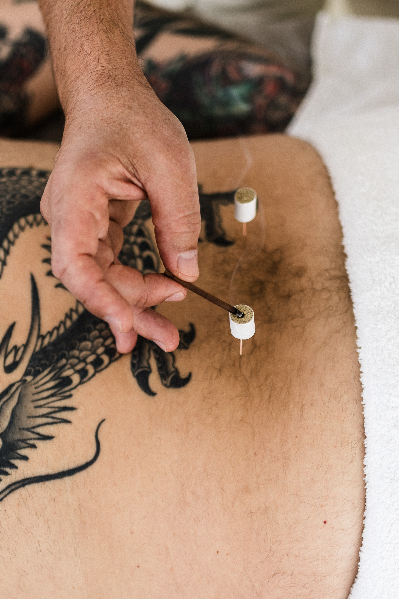
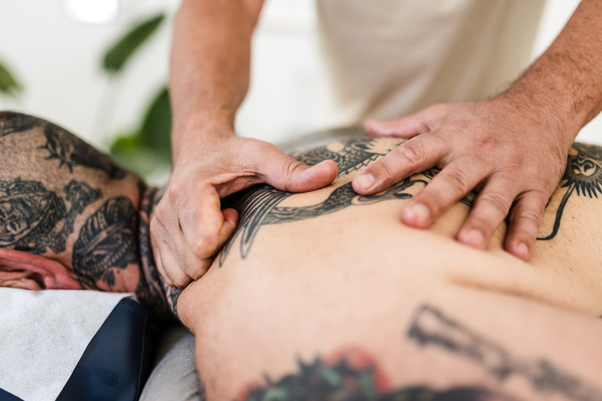
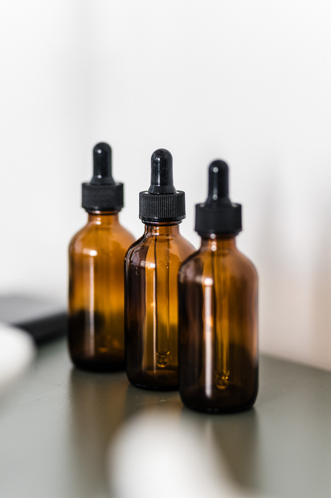
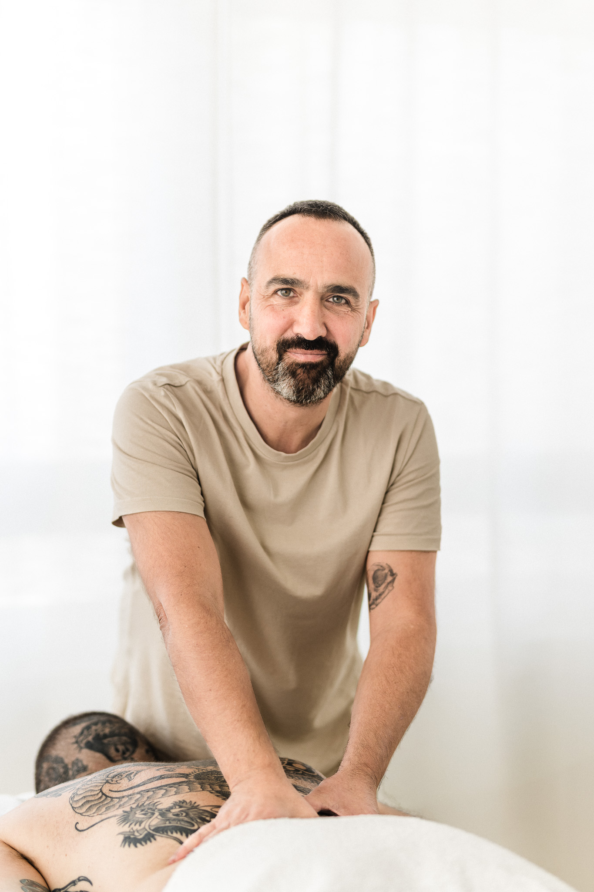

Fytō atelier
Heilpraktiker (Deutschland) & Naturopata graduado (Spanien)
Massage • Japanische Akupunktur • Phytotherapie
Maspalomas, Gran Canaria

Behandlungen
Treatments
Jede Behandlung wird individuell auf Ihre Bedürfnisse abgestimmt – mit dem Ziel, Beschwerden zu lindern und Ihr Wohlbefinden nachhaltig zu fördern.
Feine, präzise Meridianarbeit – individuell abgestimmt.
Therapeutische Körperarbeit für Entspannung, Beweglichkeit und Balance.
Pflanzenheilkunde als ergänzender Bestandteil eines integrativen Konzepts.




Über mich
About
Seit 2012 arbeite ich als Heilpraktiker und habe meine Heilpraktikerprüfung in Berlin abgelegt.
Mit meiner Praxis auf Gran Canaria habe ich einen Ort geschaffen, an dem traditionelle Heilmethoden und moderne therapeutische Ansätze zusammenfinden.
Meine Schwerpunkte liegen in der Massage, der japanischen Akupunktur und der Phytotherapie. Im Mittelpunkt meiner Arbeit steht die gezielte Linderung von Beschwerden. Durch die Kombination dieser Methoden begleite ich Sie individuell – zur Stabilisierung Ihres Wohlbefindens und zur Förderung tiefer, nachhaltiger Entspannung..
Wichtig ist mir, jedem Menschen mit Ruhe, Achtsamkeit und Respekt zu begegnen. Meine Behandlungen verstehe ich als Einladung, wieder in Balance zu kommen – körperlich wie seelisch.
Hinweis: Die angebotenen naturheilkundlichen Verfahren ersetzen keine ärztliche Diagnose oder medizinische Behandlung
Preise
Prices
60 Minuten – 70 €
90 Minuten – 100 €
Rückenbehandlung (ca. 30 Minuten) – 35 €
Behandlung (ca. 60 Minuten) – 70 €
Phytotherapie PhytotherapyAnamnese & individuelle Heilpflanzen-Rezeptur – 30 €
Bezahlung in bar oder per PayPal möglich. Die Preise verstehen sich pro Sitzung. Terminabsagen bitte mindestens 24 Stunden im Voraus.
Kontakt
Contact
Fytō atelier
Av. de España 7
35100 Playa del Inglés
Maspalomas · Gran Canaria
WhatsApp Deutschland 🇩🇪
+49 163 8790649
WhatsApp Spanien 🇪🇸
+34 600 926237
E-Mail
delladucata@icloud.com